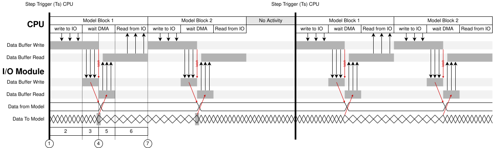
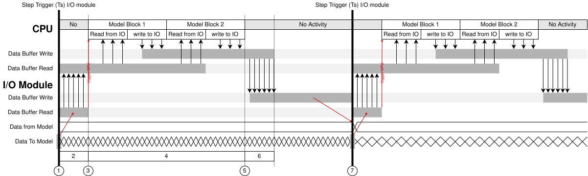
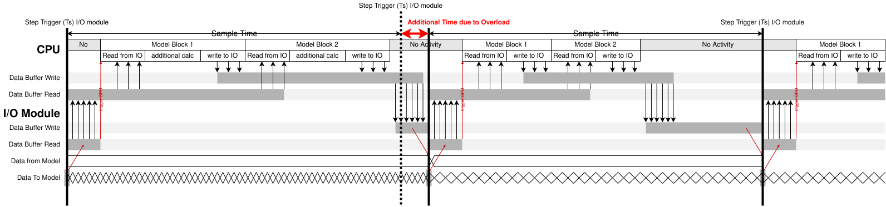

DMA Controller Usage Notes
DMA Controller Usage Notes — Information about the I/O module
Model Behavior
Using Optimize Data Transfer changes the timing relationship between the configurable I/O module and the model execution:
Standard Model Behavior without Optimized Data Transfer
If Optimize Data Transfer is not activated, the timing behavior is as follows:

The CPU triggers each step. Each code module (Model Block x in the drawing) is executed one after the other, starting with Block 1
The block writes all necessary data to an internal write buffer in the CPU. When completed, the DMA is triggered
The DMA transfers all data from the CPU write buffer to the I/O module write buffer
The last entry of the DMA write transfer to the I/O module triggers a latch event that internally copies the data from the I/O module write buffer to ensure that all the data become active in the I/O module at the exact same point in time (timing consistency). Concurrently to this process, all data to be read from the CPU are copied to a read buffer on the I/O module
The DMA continues with read transfer: the data from the I/O module read buffer are transferred to the CPU read buffer
The block reads the data from the internal read buffer on the CPU
The block execution is finished. The execution of the next block then starts
These steps are repeated for every block in the model. Once all the blocks have executed, the CPU returns to idle and the next step can be triggered.
Note: For a model without DMA Controller, each block transfers data from and to the I/O module using an individual DMA transfer.
Model Behavior with Optimized Data Transfer and Synchronization to the I/O Module
If Optimize Data Transfer is activated, the timing behavior is as follows:

Data transfer between the I/O module and CPU from the model blocks are gathered into one common transfer from I/O module to CPU and into one common transfer from CPU to I/O module.
The I/O module triggers each step. All data to be read from the CPU (for all blocks with this FPGA I/O module identifier) are then copied timing-consistent to a read buffer on the I/O module. The I/O module CPU DMA transfer then starts
The DMA transfers all data from the I/O module read buffer to the CPU read buffer
The last transfer of the previous DMA transaction triggers the model on the CPU
All the code module blocks are executed one after the other. Each block reads data from the CPU read buffer and writes data to the CPU write buffer
When all the blocks on the CPU have executed, the CPU à I/O module DMA transfer then starts
The DMA transfers all data from the CPU write buffer to the I/O module write buffer
The I/O module triggers the next step. Additionally, all data from the I/O module write buffer are copied internally at this exact point in time
![[Note]](images/note.png) | Note |
|---|---|
All data to read is latched at the start of a step, processed during the step, and becomes active on the I/O module at the start of the next step. Depending upon the used code module functionality, not all blocks are applicable or capable to insert their data into the common data transfers. These blocks will use the individual block data transfers as described in the chapter above. |
Model Behavior in Case of Overload
The following situation leads to an overload of the model-step:

An overload occurs when the processing (DMA read, CPU calculation, DMA write) exceeds the maximum time for a single step. When this happens, the I/O module will not start the next step until the overloaded step is completed. The model behaves as follows, depending on the setting for the Stop Model on Overload parameter:
Stop Model on Overload = ON
- The DMA Controller block throws an error and stops the model
Stop Model on Overload = OFF
- The DMA Controller block continues operation; the output Overload of the DMA Controller block is set to true
| Note |
|---|---|
When an overload occurs, the delay will impact the real-time behavior of your model (step execution jitter) |